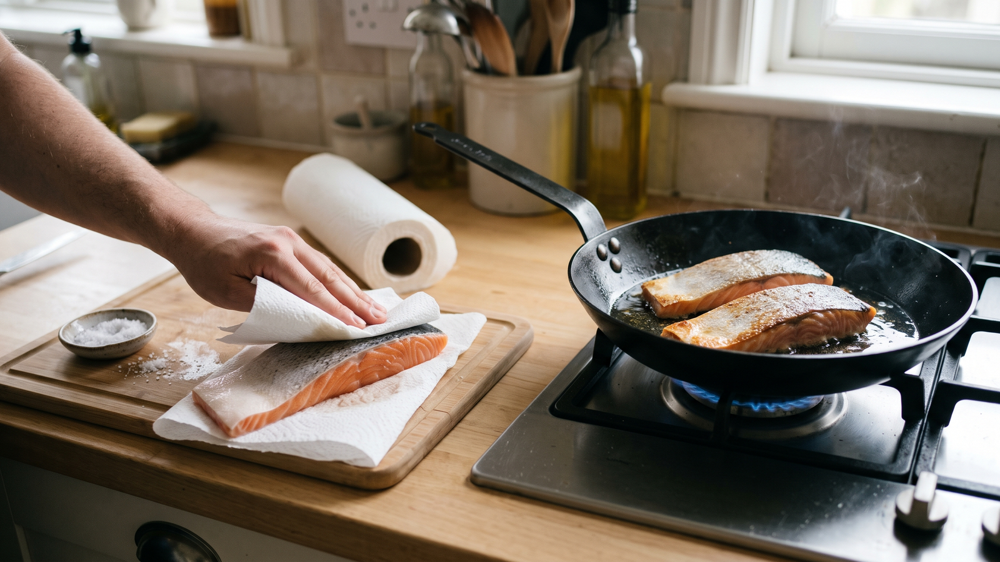

魚の切り身は「皮を拭いてから焼く」だけで変わる？パリッと香ばしく仕上げるコツ
皮つきの魚の切り身をフライパンで焼くとき、皮がくにゃっとしてフライパンにくっつき、めくれてしまった経験はありませんか。せっかくなら、皮まで香ばしくきれいに焼き上げたいですよね。
そんなときにすぐできる工夫が、焼く直前に皮の水気をペーパータオルで押さえて拭いてから、皮目を下にして焼くことです。
---
なぜ皮の水気を拭くとパリッとしやすくなるの？
理由は、台所でおなじみの「水と熱の関係」にあります。
フライパンの上に水分が残っていると、せっかくの熱が「水を蒸発させて湯気にする」ほうへと使われてしまいます。そのため、水が残っている間は皮の表面が十分に熱くなりません。濡れたふきんにアイロンを当てても、湯気が出ている間は焦げ目がつかないのと同じです。
あらかじめペーパータオルで水分を拭き取っておけば、熱を皮を焼くほうへしっかり回しやすくなります。
魚は火を通していくと自然と余分な水分が抜けていきますが、きれいな焼き色は表面の水分が少ないところからついていきます。焼く前にひと手間かけて表面の水分を取っておくことが、皮をパリッとしやすくする近道です。
---
おうちで試せる皮パリ焼きの手順
家庭で試しやすいように考えた一例です。ぜひ今夜のおかずに試してみてください。
材料（2人分）
* 皮つきの魚の切り身（生鮭、さわら、たいなど）：2切れ（1切れ約100g） * 塩：小さじ1/4 * サラダ油：小さじ1
作り方
- 魚を流水でよく洗い、ペーパータオルで皮と身の両面を押さえて水気を拭きます（東京都保健医療局「食品衛生の窓」）。魚を触ったあとはよく手を洗い、魚を切った包丁やまな板はしっかり洗ってから野菜などの生で食べる食品に使ってください（厚生労働省「家庭でできる食中毒予防の6つのポイント」）。
- 両面に塩をふり、冷蔵庫に入れて10分おきます。
- 表面に出てきた水分を、新しいペーパータオルで拭きます。皮は特にていねいに押さえます。
- フライパンに油を入れて中火で温め、皮目を下にして魚を置きます。動かさずに3〜4分焼きます。
- 皮に焼き色がついて、フライパンから自然に離れるようになったら裏返します。弱めの中火で2〜3分焼き、身のいちばん厚いところまで白っぽく変わったことを確かめて、中心部まで十分に火を通します。
---
別の日常料理への応用
「焼く前に余分な水分を拭く」というひと工夫は、魚の切り身以外のおかずでも手軽に使えます。
* 豚肉や鶏肉の表面を拭いてから焼いてみてください。 * 解凍した魚から出た水分を拭いてから焼いてみてください。 * 洗った野菜の水気を切ってから炒めてみてください。
---
まとめ
魚を焼く前に、ペーパータオルで皮の水気をていねいに押さえてみてください。水分を先に拭き取っておくだけで、フライパンの熱を皮を焼くほうへ回しやすくなり、皮がパリッとしやすくなります。特別な道具も調味料もいらないので、今日の食卓から気軽に試してみてくださいね。
---
参考資料
* 厚生労働省「家庭でできる食中毒予防の6つのポイント」 https://www.mhlw.go.jp/www1/houdou/0903/h0331-1.html * 東京都保健医療局「食品衛生の窓」 https://www.hokeniryo1.metro.tokyo.lg.jp/shokuhin/micro/tyouen.html